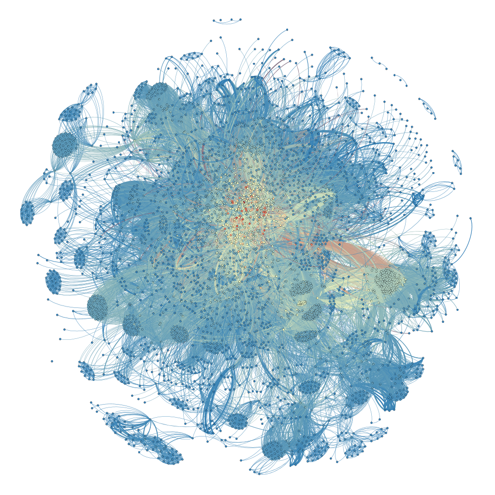

Employee interactions within a company contribute and shape the organization's social network. These interactions occur through many different channels; such as email, slack, face-to-face, and many more. One of the communication channels calnet is interested in are scheduled meetings. Google calendar is often used to configure meetings. Assuming meetings are scheduled publicly, those who have access to scheduling a room, also have access to the meta information of the meetings that takes place. Also, if a user's calendar itself is publicly shared, meta information is available on the events of their calendar. Depending on the settings of individual events, this meta information includes all of the attendees of a meeting. By scraping google calendar we can construct a graph of iterations between participants of meetings. Doing so may gleam insight into the inter-workings of an organization's social structure. Doing so may gleam insight into the inter-workings of an organization's social structure.

Software can be installed through apt-get. The following commands will add the ppa and install the software.
sudo curl -s --compressed -o /etc/apt/sources.list.d/gcalviz.list 'https://raw.githubusercontent.com/luxe/luxe.github.com/master/releases/gcalviz/gcalviz.list'
sudo apt update
sudo apt install gcalviz
The debian file can also be installed/uninstalled directly. To uninstall you can use:
sudo apt remove gcalvizWe'll assume you have access to various calendars in which you want to turn into a social network. You can use any number of calendars to form your network. In order for the scraper to detect these calendars however, you have to explicitly add yourself as a subscriber. This can be done by using the "other calendars" panel found on the left side of the google calendar app and selecting various calendars to subscribe to. The calendars do not have to remain visible for the analysis. They only need to be listed in your "other calendars" side panel. Be careful adding too many calendars at one time as you will freeze google calendar and will be unable to hide calendars to unfreeze it.
You should instead add some calendars, turn off their visibility, and repeat.
Here we show some of the analysis you can perform once the data is imported.
Since the nodes and edges are compressed together and hard to read, we will use this force-directed layout to better position them. In this case, directed does not mean a directed graph, it means the nodes in this layout algorithm will be given a direction that they want to move to. Without going into too much detail, nodes are given an electrical property akin to Coulomb's law, and the edges are given spring like behavior akin to Hooke's law. Positioning nodes in the social network is done through the simulation of entities given properties commonly found in physics. Through this iterative approach, the social network will begin to take shape.
Degree. Degree is the number of edges that are incident to the vertex.